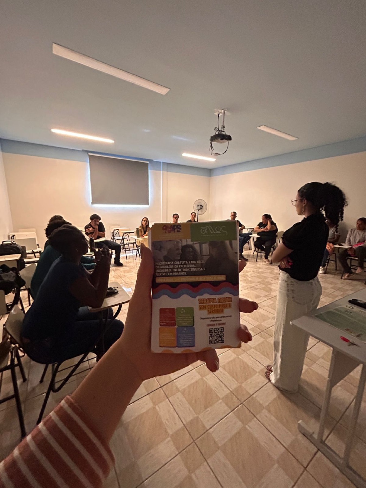
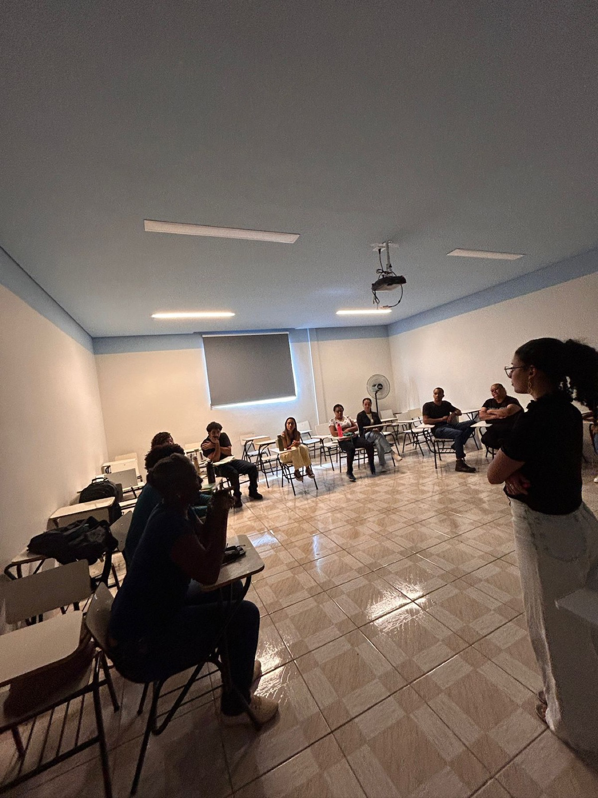

A capacitação foi boa no dia. Na segunda-feira, tudo voltou ao que era.
Todo gestor conhece essa cena. É o que a gente existe para não repetir.
Refazenda Rio Xopotó, Desterro do Melo (MG), 2024.
Três coisas, nesta ordem.
A gente conhece a realidade
E conhece a realidade das políticas públicas por dentro, com nome e sigla: postinho, Atenção Básica, CAPS, CRAS, CREAS, escola, matriciamento. Antes de qualquer conteúdo, a gente entende o que acontece na sua rede.
A equipe não sai igual
A equipe treina. A equipe faz caso. A gente traz exercício real e caso real para dentro do lugar de aprendizagem, e o conhecimento que a equipe já tem entra na sala junto.
Fica uma cultura de aprendizado
O treinamento não termina no último dia. A gente monta o jeito de a equipe continuar aprendendo junto, com supervisão e devolutiva, depois que a PAAPS vai embora.

Quem só assiste, aprende menos.
Uma revisão de 225 estudos mostrou que a aprendizagem ativa eleva em 6% a média das avaliações, e que a aula expositiva aumenta em 55% a taxa de reprovação. Na saúde e na assistência social, quem paga essa conta é a população atendida.
Fonte: Freeman et al., Proceedings of the National Academy of Sciences, 2014.
Foto: Radilson Carlos Gomes, fotógrafo do SUS.
O que muda entre um treinamento de prateleira e o nosso.
Treinamento importado
- Conteúdo pronto, igual para qualquer organização.
- Alguém expõe, a equipe assiste.
- No fim, uma avaliação de satisfação.
- O foco é o indivíduo que precisa se cuidar melhor.
Capacitação PAAPS
- Parte de um problema real da sua equipe.
- Oficina e discussão de caso, com a equipe trabalhando junto.
- No fim, uma devolutiva técnica para a gestão.
- O foco é a rede e a instituição, não a força de vontade de cada um.
Existem treinamentos prontos. E a primeira pergunta continua sendo a sua.
A gente tem uma grade construída, e mesmo assim começa perguntando qual é a sua demanda. A partir dela o treinamento é montado. Serve a qualquer organização, inclusive empresas.
- Fluxo, encaminhamento e matriciamento de casos
- Comunicação entre equipes e serviços
- Construção de equipe na rede pública
- Temas sanitaristas
- Reforma psiquiátrica
- Violência de gênero, violência contra a mulher e saúde da mulher
- Questões raciais e saúde da população negra
- Saúde da população LGBTQIAPN+

Uma rede montada por tema, formada na metodologia da casa.
- Consultores com mais de 25 anos de carreira executiva.
- Professores e educadores com mestrado ou doutorado, vindos da universidade e da pesquisa.
- Todo mundo que entra passa pela formação da PAAPS antes de ir a campo.
Refazenda Rio Xopotó, Desterro do Melo (MG), 2024.